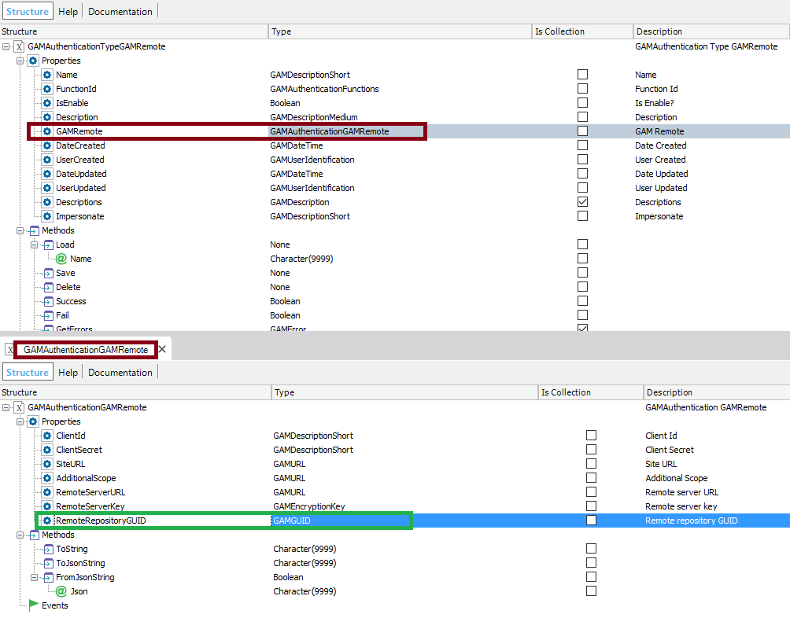

It's a property of the GAM API which allows configuring the Repository GUID of any Repository of the GAM Identity Provider in a multitenant architecture. When the GAM Remote Authentication Type is used in a multitenant scenario, in the client Application, you can configure which is the Identity Provider's Repository to connect to. This should be done in the GAM Remote Authentication Type configuration of the client application. See Howto: Multitenant applications using GAM remote authentication for detailed information on this topic. The property belongs to the GAMAuthenticationGAMRemote object.  See how to use it programmatically in the GAMExampleAuthenticationTypeEntry object (which is part of the GAM Web Backoffice): &AuthenticationTypeGAMRemote.GAMRemote.RemoteRepositoryGUID = &GAMRRepositoryGUID |